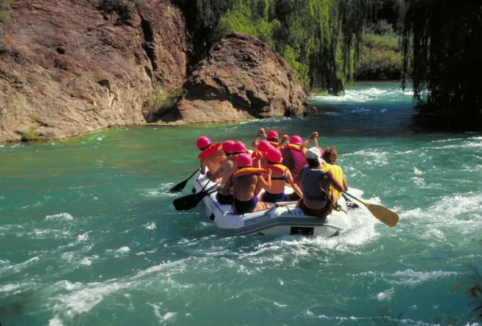

San Rafael , Mendoza

San Rafael, located in the southern region of Mendoza Province, Argentina, is a city that combines stunning natural landscapes with a diversified economy. Nestled between the Diamante and Atuel rivers, the area boasts tourist attractions such as the Atuel Canyon and Valle Grande reservoir, ideal for adventure activities and ecotourism. The local economy is supported by agriculture, notably viticulture with numerous renowned wineries, as well as industry and commerce. The semi-arid climate features marked seasonal variations, with hot summers and cool winters, favoring a variety of crops. The city blends urban areas with rural zones, offering a range of landscapes from mountains and valleys to fertile plains, reflecting a unique geographical and cultural richness.